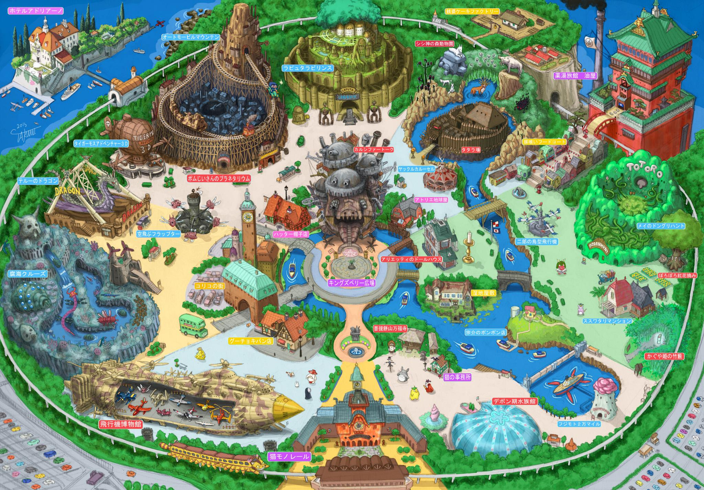

Ce 26 novembre a pris place la 6ème édition du CTF Flag'Malo !
En quoi cet évenement consiste-il ?
Ce jour très attendu et populaire invite les étudiants de l'IUT de Saint-Malo, ses professeurs, et les lycéens de la ville de Saint-Malo, à
résoudre des énigmes autour de la cybersécurité.
Ce CTF (Capture The Flag) est organisé par les étudiants de deuxième année de DUT Réseaux & Télécommunication de Saint-Malo.
Une première
J'ai participé pour la première fois (et sûrement pas la dernière) à un CTF avec l'équipe 'nocap' ! Notre groupe de 5 se composait de :
Kronos
eddymalou27
Chepa
MoLam
pochoyy (moi)
De 9h à 18h, nous avons travaillé sans relâche.
L'organisation était parfaite, l'évenement bien encadré, avec de la nourriture et des goodies pour tout le monde (par exemple des stickers YesWeHack:o) pour chaque membre de l'escouade.
Une liste des définitions et des liens de références pour votre documententation personnelle :
Téléchargez ici mon WriteUp sur l'un des challenges d'Obuscation Javascript présenté dans la liste de challenges. A noter que l'ensemble des défis sont à retrouver sur github.
Capture The Flag (CTF)
Un CTF est en général composé de plusieurs épreuves réparties dans différentes catégories et pour différents niveaux, du plus facile au plus difficile. Savoir dans quelle catégorie se trouve un challenge peut aider à l’appréhender.
JavaScript (JS)
Un langage de programmation de scripts principalement employé dans les pages web interactives et à ce titre est une partie essentielle des applications web. Avec les langages HTML et CSS, JavaScript est au cœur des langages utilisés par les développeurs web.
Dans le cadre d'une présentation en cours d'anglais, et pour lequel le sujet imposé était
l'une de nos passions, j'ai présenté le Studio Ghibli qui venait tout juste d'ouvrir son parc au public japonais
Ghibli Museum & Theme Park located in Japan opening its door to visitors !
A world renowned Animation Studio from Japan
Here I will be focused on Ghibli Studio art works, animated movie, not only in cooperation with the world famous artist Myiazaki. I’ve watched many times each of ~23movies as a child and I will keep this path, and love every one of them. except for Omohide poro poro which is a very boring movie.
Actually, my presentation is well-timed because this month, the Ghibli Musuem & Theme Park is opening its doors in Japan. It’s a really exciting for every fans of Ghibli movies scattered all over the world. To make it more specific, this is equivalent to a DisneyLand but in Japan with Studio Ghibli works.

I was tricked by a videogames / young culture magazine, they announced in a well-written article a theme
park with rollecoasters and this picture on the left was linked. (made from disneyland park schemes)
You can find the fan's original drawing there.
What is Studio Ghibli ? I litterally compared it as a Disney equivalent made in Japan but that’s not it. These are both entirely unique entities :
Origin : before my research, I never thought about the producers, who were behind this tremendous work ? Without surprise I learned that Miyazaki was one of the founder.
Most of the films produced by Studio Ghibli were written and directed by Miyazaki. His son joined the company and already made its proof as a film director.
First, there was Topcraft, but the studio went bankrupt and dissolved on June 15, 1985, essentially splitting the studio in half. Hayao Miyazaki, Toshio Suzuki and Isao Takahata formed Studio Ghibli.
How many movies, etc : hand-drawn animation, recently releases a 3D animation using computer generated imagery (CGI) film. It provocked a lot of panic among fans but eventually I watched it and in my opinion they still made a great use of this new technology.
His last animation is nearly finished, even if this story-writer is well-known for announcing his retiring but still going on :
And the great pianist who made these awe inspiring music themes we all heard at least one time, either in an airport, or at highschool during every lunch breaks
Joe Hisaïshi followed Miyazaki in almost every movies he made, I guess. They have an alchemy, their works are very homogenic.
One song among every masterpieces he made :
Joe Hisaishi performing in Nantes - october 2022
So, this Ghibli Museum is open since 1st of November, and I hope I will be able to travel to this country, even if it’s only one night, I don’t mind, I just want to see Totoro’s House Replica and buy the most merchandises I can.
Tickets to overseas visitors are not on sale now, and the release date will be announced on their website, and it's not bad because we had 1 week of vacations and the park is not over yet which means many areas are under-constuctions.
(The park's website warns visitors that "there are no big attractions or rides in Ghibli Park.")
Some Great Titles to begin with !
I don't have a favourite one, but this list groups some great ones if you are interested by this animation studio
My Neighbor Totoro
Nausicaä of the Valley of the Wind
Howl's Moving Castle
A list of definitions and reference links for your personal documentation :
Hayao Miyazaki (宮崎 駿, Miyazaki Hayao, [mijaꜜzaki hajao]; born January 5, 1941) is a Japanese animator, director, producer,
screenwriter, author, and manga artist. A co-founder of Studio Ghibli, he has attained international
acclaim as a masterful storyteller and creator of
Japanese animated feature films, and is widely regarded as one of the most accomplished filmmakers in the history of animation.
Joe Hisaishi, Maestro and pianist of genius
Mamoru Fujisawa (藤澤 守, Fujisawa Mamoru, born December 6, 1950), known professionally as Joe Hisaishi
(久石 譲, Hisaishi Jō), is a Japanese composer,
musical director, conductor and pianist, known for over 100 film scores and solo albums
dating back to 1981
Computer Generated Imagery (CGI)
It's the use of computer graphics to create or contribute to images in art, printed media, video games, simulators, and visual effects in films, television programs, shorts,
commercials, and videos. The images may be static (still images) or dynamic (moving images), in which case CGI is also called computer animation. CGI may be two-dimensional (2D),
although the term "CGI" is most commonly used to refer to the 3-D computer graphics used for creating
characters, scenes and special effects in films and television, which is described as "CGI animation"